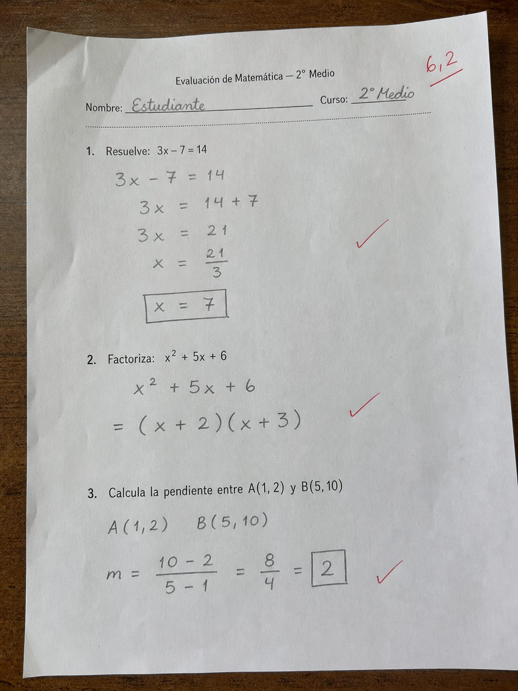
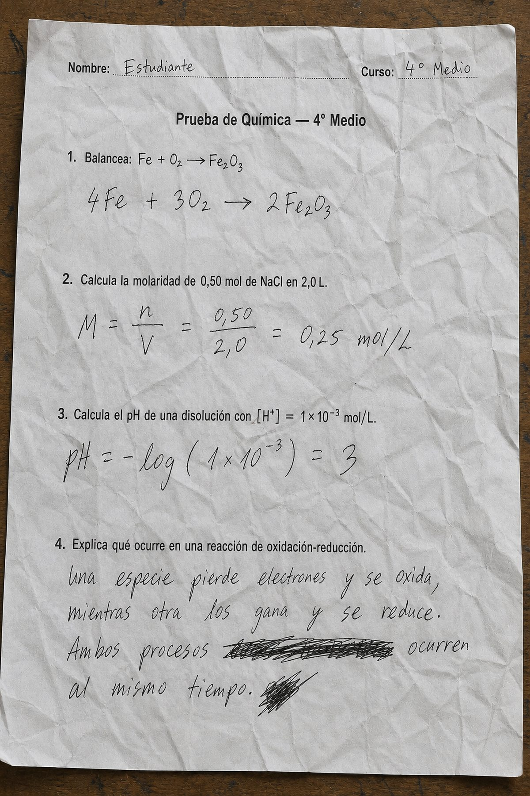
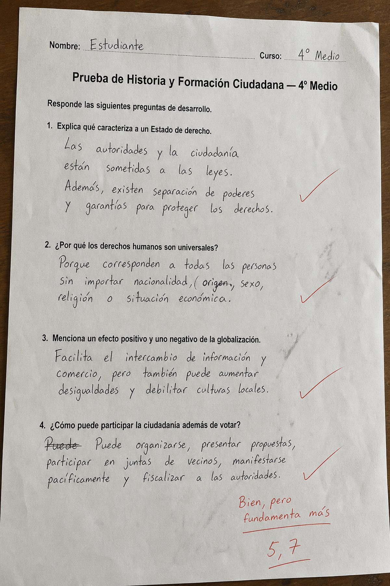
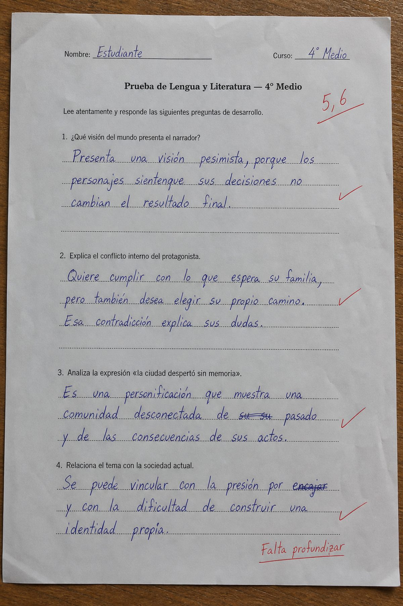
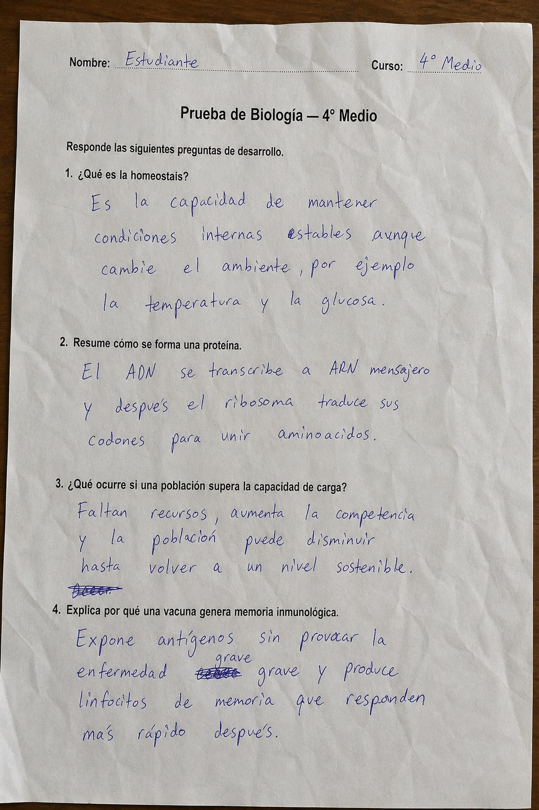
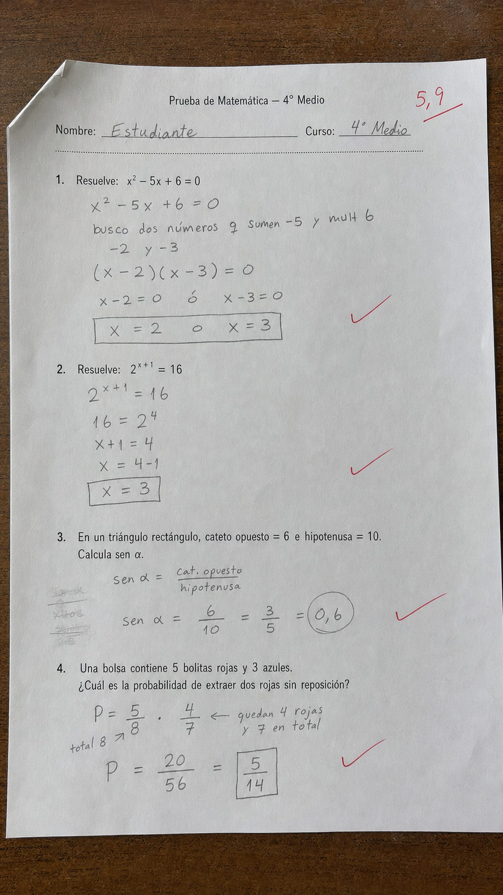

El scanner inteligente lee la hoja y corrige, incluido el desarrollo manuscrito. Devuelve la nota con el desglose: qué objetivo falló, con qué habilidad y a qué nivel de dificultad. El mismo dato sube de curso a colegio, universidad o red.






Entre cuatro y seis horas por curso. Y el profesor tiene cinco cursos. La retroalimentación llega dos semanas después, cuando ya no sirve.
La prueba número 3 y la número 29 no se corrigen con la misma vara. Y dos profesores del mismo departamento tampoco corrigen igual.
Después de todo ese trabajo, lo único que queda registrado es un 5,6. Nadie sabe qué objetivo falló, ni con qué habilidad, ni en cuántos alumnos más.
Alternativas y desarrollo manuscrito, los dos en la misma hoja. La IA lee la letra del alumno, aplica la rúbrica y explica el puntaje criterio por criterio.
Las imágenes de esta página son pruebas reales corregidas a mano. La rúbrica y los puntajes son un ejemplo de salida del sistema.
Cada pregunta queda etiquetada con objetivo de aprendizaje, eje temático, habilidad cognitiva y dificultad. El profesor recibe la nota y el mapa de la brecha, alumno por alumno.
El profesor escribió “falta profundizar” con lápiz rojo. El sistema dice exactamente dónde: la habilidad de evaluar, en preguntas de dificultad alta. Y muestra a qué otros ocho alumnos del curso les pasó lo mismo.
Ver el dashboardCada pregunta corregida alimenta el nivel de arriba. Nadie tiene que llenar una planilla.
Reforzamiento en preguntas de habilidad evaluar y dificultad alta. Set de 6 preguntas tomadas del banco propio del colegio y del banco compartido.
Dos profesores corrigieron el mismo objetivo con 1,2 puntos de diferencia promedio. Ahora eso se ve, se conversa y se corrige.
El PDF de la prueba que ya usa, o la hoja directo al escáner. No hay que rehacer nada ni digitar nada.
Identifica cada pregunta y le asigna objetivo, eje, habilidad cognitiva y dificultad. Genera la rúbrica y avisa si algo está mal formulado.
Filtra por curso, objetivo o dificultad y combina preguntas propias con el banco compartido. El profesor decide el orden y el corte.
Una sola hoja con alternativas y espacio de desarrollo. Papel normal, impresora normal, escáner de cualquier marca.
Nota, detalle por objetivo, evidencia del manuscrito y set de reforzamiento. Todo alimenta el dashboard del curso y de la institución.
La tarifa depende del tamaño. Los puntos de conexión se suman aparte.
Por punto al mes. Incluye escáner, dispositivo, mantención y respuesta ante fallas. La institución no compra hardware.
Por punto al mes para conectar un escáner compatible que la institución ya posee. Driver propio, cualquier marca.
La institución compra el equipo y paga por cada punto de conexión activo.
Tarifa base en UF, indexada. Montos en dólar referenciales. Precio preferente para instituciones que ya son clientes del ecosistema. Financiable con presupuesto público de mejora educativa donde exista (en Chile, SEP vía PME).
El escáner abre la puerta. Lo que queda adentro es el único registro longitudinal de evaluación real de la institución: pregunta, respuesta manuscrita, objetivo, habilidad y brecha, por alumno, cada semana. Eso se acumula y no se puede comprar hecho.
El profesor paga por corregir. La institución paga por gobernar el banco: cobertura curricular, consistencia entre profesores, comparación entre sedes. Otro comprador, otro presupuesto, otro ticket.
Manda una prueba que ya aplicaste, con la letra de tus alumnos. La procesamos en la reunión y vemos juntos la nota, el detalle y el dashboard.